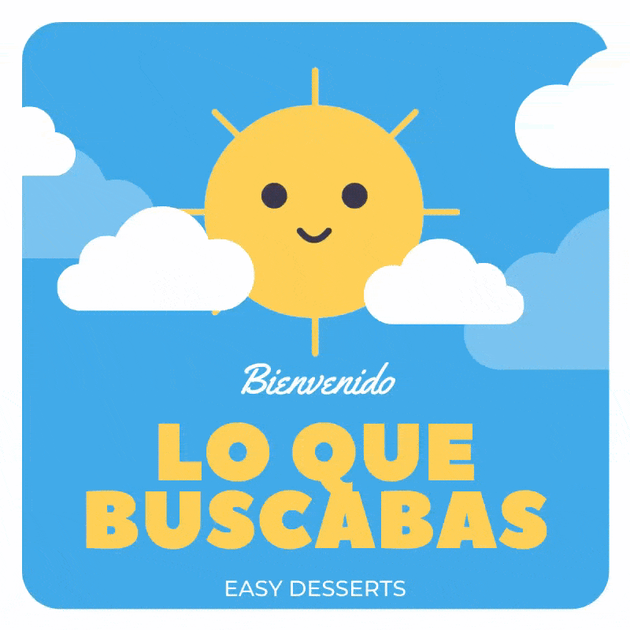
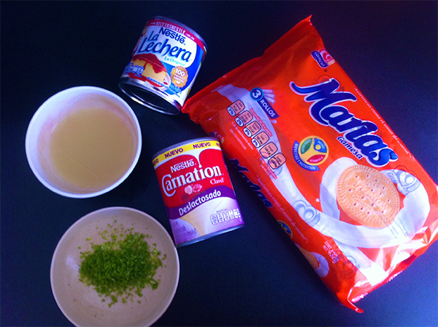
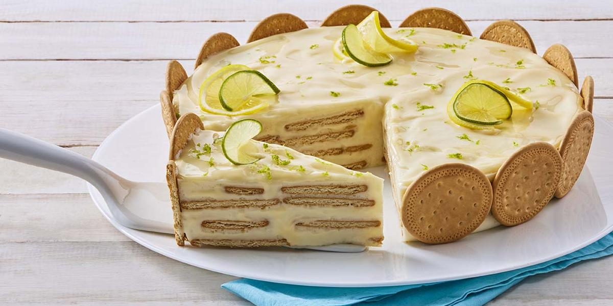

| |
Postres sencillos y rápidos |
Inicio |
Pay |
Carlota |
Pastel |
| |
Postres sencillos y rápidos |
Inicio |
Pay |
Carlota |
Pastel |
| PAY DE LIMÓN |  |
|  | Ingredientes
|
Preparación
|
 |
| Presentación Acompaña este pay de limón con galletas María poniéndole frutos rojas o ralladura de limón. |